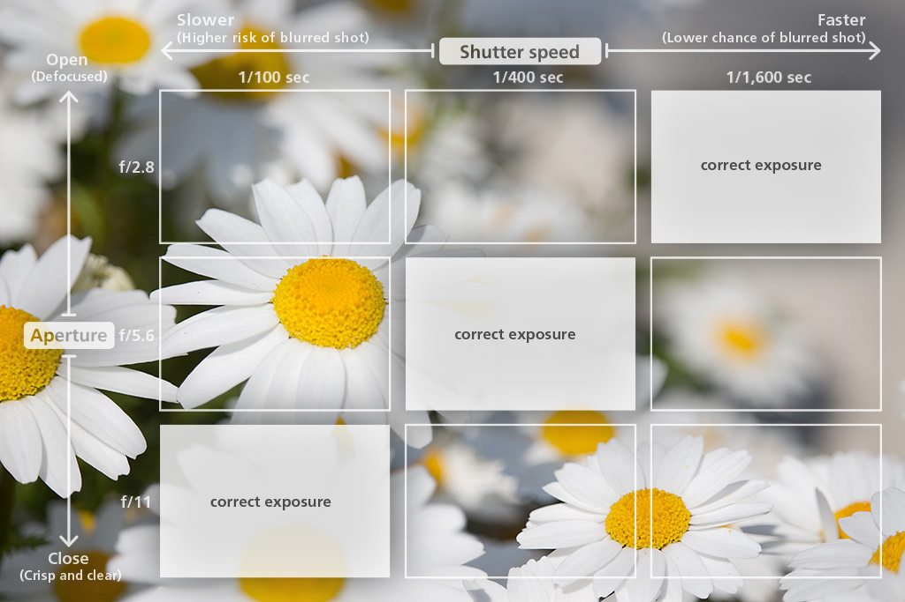
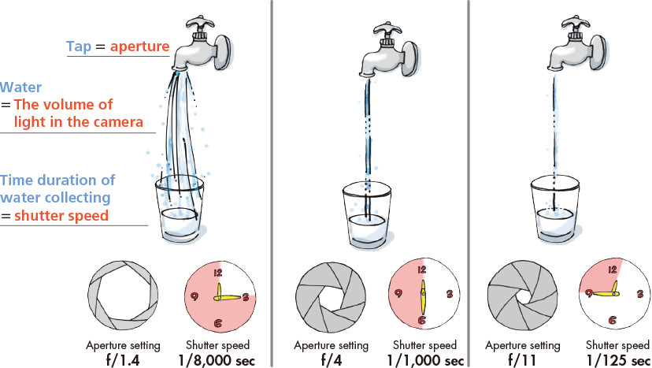
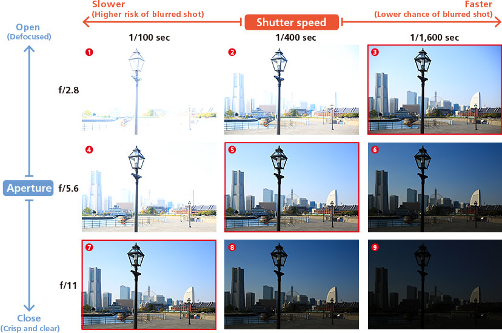
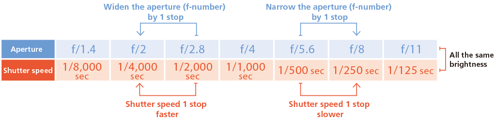

Photography Basic | Part 4
Exposure
Exposure is one of the major factors that can make or break a picture. Let us talk about how we can go about make best use of exposure to get the best results from a shot.

“Exposure” refers to the brightness in a picture as decided by the interaction between aperture and shutter speed
Points-to-note
-Cameras are equipped with an Auto exposure (AE) function.
-We refer to brightness that is calculated and set by the camera as “correct exposure”.
-We refer to brightness that is calculated and set by the camera as “correct exposure”./p>
The word “exposure” refers to the volume of light taken in at the instant the picture is taken, which affects the brightness of the resulting image. This volume of light is essentially decided by the combination of the aperture and shutter speed settings.
DSLR cameras are equipped with an automatic exposure (AE) function. Therefore, under normal conditions where the ISO speed is constant, you don’t have to think about which aperture and shutter speed setting will give you the adequate exposure as it will be automatically set by the camera. We can get good results with all sorts of scenes and subjects with this automatically-set exposure, which we call the “correct exposure”.
However, correct exposure may not be the optimal exposure for the scene, as depending on the condition of the scene and the subject, there are times where the brightness of the scene does not turn out as we would like it to be. When this happens, we can always make use of the exposure compensation feature to adjust the brightness level. When we want the image to look be darker, we can set a negative (“-“) exposure compensation value. If we want a brighter image, we can set a positive (“+”) value.
Even when taking pictures of the same situation or the same subject, a simple adjustment to the exposure can give you very different results. In other words, the art of exposure compensation is something we must all learn in taking a good picture.
When we turn the tap (aperture) on, the time taken for the water to collect (shutter speed) is shorter
When tap (=aperture) is turned up, more water (=light) will flow in and the time taken for the water to collect (=shutter speed) shortens (=becomes faster) and is enough to get a good exposure. On the other hand, tap (=aperture) is turned down, less water (=light) flows in, the time taken for water to collect (=shutter speed) becomes longer.
Concept 1: Exposure results from interaction between aperture and shutter speed
Using either of the following combinations would result in the same level of brightness:
1. Larger aperture (smaller f-number) + faster shutter speed
2. Smaller aperture (larger f-number) + slower shutter speed
Look at examples (3), (5) and (7) below. They are the results of a different combination of shutter speed and aperture. But you see the same brightness (exposure) in the pictures.
Examples (3), (5) and (7) are all of the same brightness (correct exposure
Example (1) is overexposed
Example (9) is underexposed
Concept 2: The auto exposure (AE) functions
Take a look at the chart below. It shows clearly how there are a few patterns to the combination of aperture and shutter speed. You might find it difficult to decide on which combination to pick. However, a digital camera is equipped with some very convenient automatic exposure (AE) functions that simplifies the process.
There is “Program AE mode” [ P ] mode )where the camera automatically sets both aperture and shutter speed; “Shutter-priority AE” [ Tv ] mode, where you set the shutter speed and the camera decides the aperture; and “Aperture-priority AE” [ Av ] mode where you set the aperture and the camera decides the shutter speed. We will explain more about these modes in future articles so do look out for them!
When you’ve set your camera to any of these modes, all you need to do is release the shutter and you will get an image with the appropriate exposure. Convenient and hassle-free!